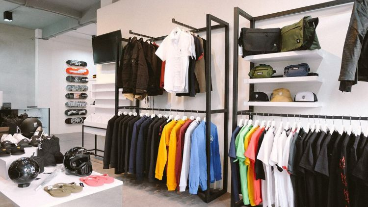
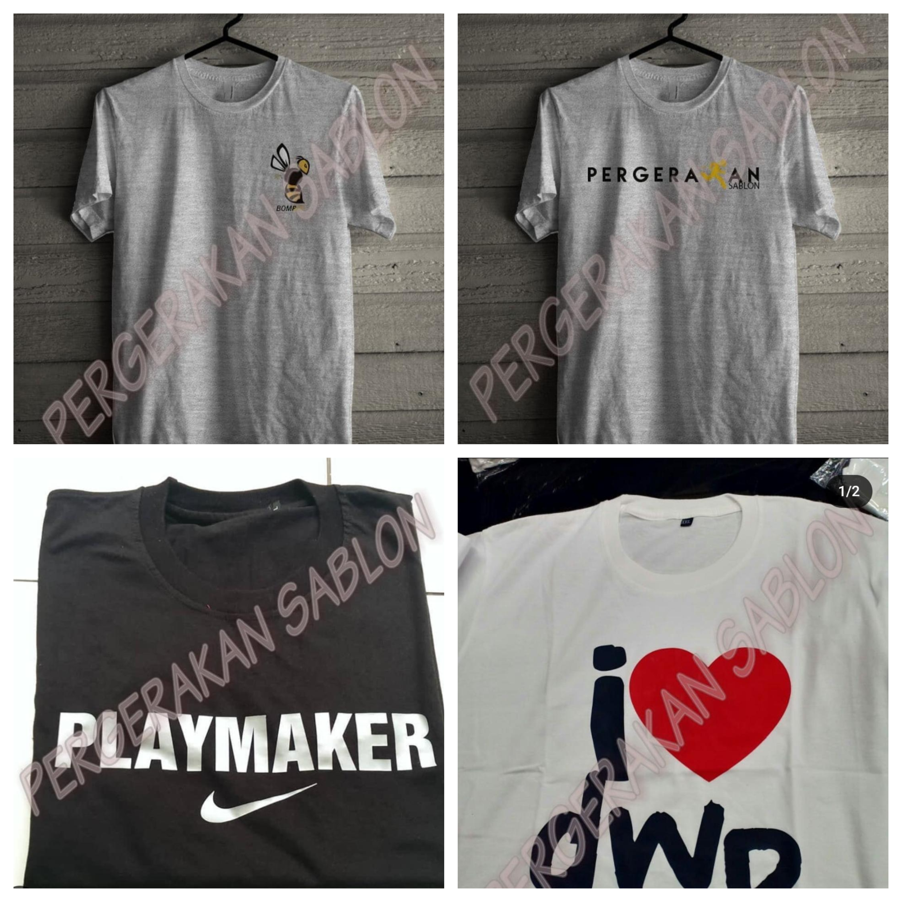
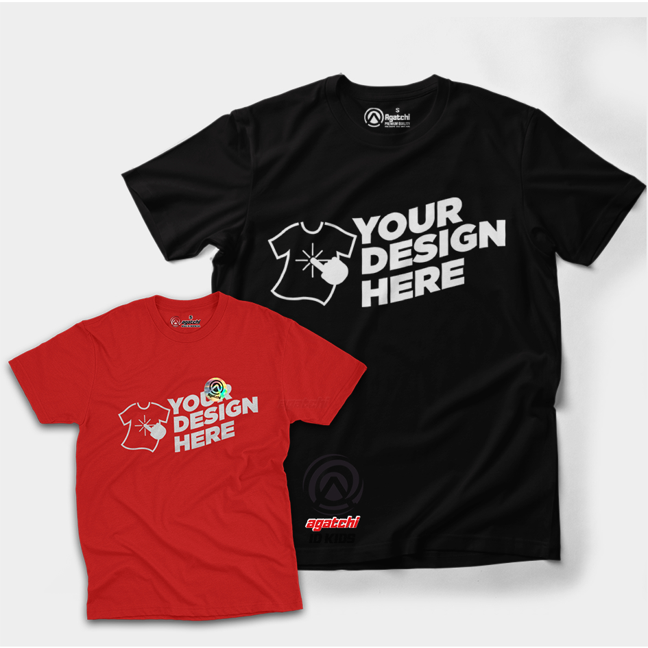
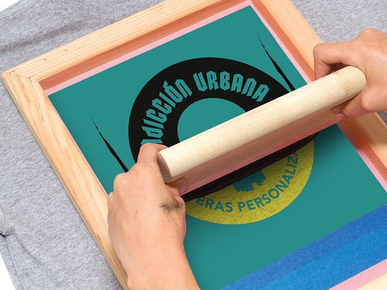
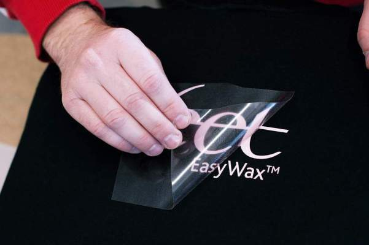
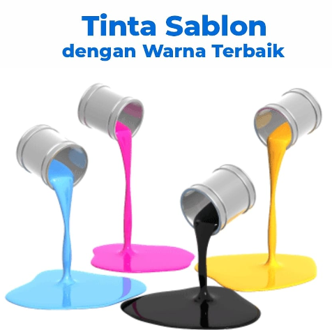
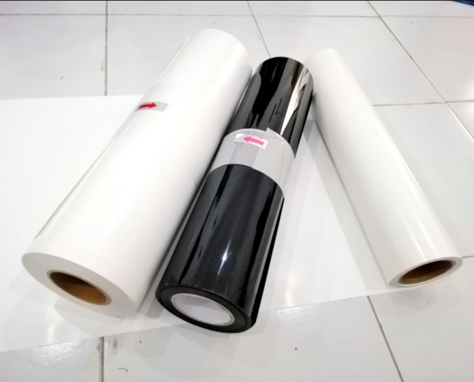
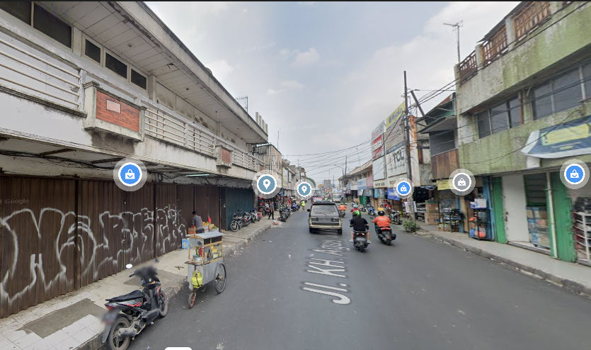

PROFIL PERGERAKAN SABLON

Pergerakan, bukan hanya blog kaos biasa. Kami adalah tempat Anda untuk menemukan kaos terbaik di Internet. Ada banyak merek kaos yang luar biasa di luar sana. Tetapi itu berarti jika Anda ingin menemukan kaos grafis yang sempurna, Anda harus memeriksa setiap satu merek yang luar biasa itu. Itu terdengar seperti... pekerjaan yang banyak.
Pergerakan menawarkan cara yang lebih baik dengan melakukan 3 hal:
Mengumpulkan ribuan kaos ke dalam satu daftar yang dapat dicari.
Menerbitkan daftar pilihan dari kaos terbaik untuk topik-topik tertentu.
Memberikan Anda kupon kaos yang berfungsi sehingga Anda dapat menghemat uang pada semua kaos keren yang Anda temukan.
PRODUK SABLON

Produk sablon adalah produk yang dibuat dengan menggunakan teknik sablon, di mana desain atau gambar diterapkan ke permukaan bahan dengan cara menerapkan tinta melalui cetakan atau layar khusus. Proses ini umumnya digunakan untuk mencetak pada kaos. Produk sablon sering kali memiliki desain yang tahan lama dan berwarna-warni, menjadikannya pilihan populer untuk keperluan promosi, branding, atau keperluan pribadi.
| LIST PRODUK |
| Bahan Sablon |
Ukuran |
Harga |
JUMLAH |
| Plastisol |
Besar/Kecil |
Rp. 45.000 |
1 |
| Polyflex |
Besar/kecil |
Rp. 35.000 |
1 |
| Kaos Sablon Polyflex |
L/XL |
Rp. 60.000 |
1 |
| Kaos Sablon Plastisol |
L/XL |
Rp. 70.000 |
1 |
PEMESANAN

Bagi anda berminat untuk menyablon kaos bisa ke link ini: KLIK
atau bisa ke instagram @pergerakansablon
DOKUMENTASI
PROSES PRODUKSI SABLON
Proses produksi sablon dimulai dengan persiapan desain yang akan dicetak. Desain tersebut kemudian disalin ke layar khusus dengan menggunakan teknologi fotografi atau cetak langsung. Layar ini memiliki area terbuka dan area tertutup sesuai dengan desain yang diinginkan. Setelah itu, layar ditempatkan di atas permukaan bahan yang akan dicetak, seperti kain atau plastik. Tinta sablon kemudian diterapkan ke layar dan ditekan melalui area terbuka menggunakan rakel atau squeegee. Tinta hanya akan melewati area terbuka dan menempel pada permukaan bahan di bawahnya, membentuk desain yang diinginkan. Setelah pencetakan selesai, produk dapat dikeringkan atau dijalani proses pengeringan yang lebih lanjut, tergantung pada jenis tinta dan bahan yang digunakan. Dengan demikian, proses produksi sablon melibatkan persiapan desain, pembuatan layar, aplikasi tinta, dan pengeringan untuk menghasilkan produk akhir dengan desain yang diinginkan.
1. Produksi Sablon Plastisol

2. Produksi Sablon Polyflex

BAHAN SABLON
Berikut ini bahan sablon yang kami produksi:
-
Sablon Plastisol: Menggunakan tinta plastisol yang dikeringkan dengan pemanasan setelah dicetak pada permukaan bahan, menghasilkan hasil yang tahan lama dan berwarna cerah.

-
Sablon Polyflex: Teknik cetak desain pada kain menggunakan vinyl polyflex. Prosesnya dimulai dengan pembuatan desain digital di software seperti CorelDRAW atau Adobe Illustrator. Desain kemudian dipotong menggunakan mesin cutting, diikuti tahap weeding untuk menghilangkan bagian yang tidak diperlukan. Desain yang dipotong ditempatkan di kain dan ditekan menggunakan mesin heat press agar menempel kuat. Metode ini menghasilkan cetakan tajam, warna cerah, dan tahan lama. Polyflex tersedia dalam berbagai jenis seperti matte, glossy, glitter, dan reflective, cocok untuk berbagai kain seperti kaos, jaket, dan tas. Sablon polyflex menjadi pilihan populer untuk cetakan custom dalam jumlah kecil hingga menengah.

Lokasi Toko
Jl. Agus Salim No.15, RT.003/RW.004, Bekasi Jaya, Kec. Bekasi Tim., Kota Bks, Jawa
Barat 17113
